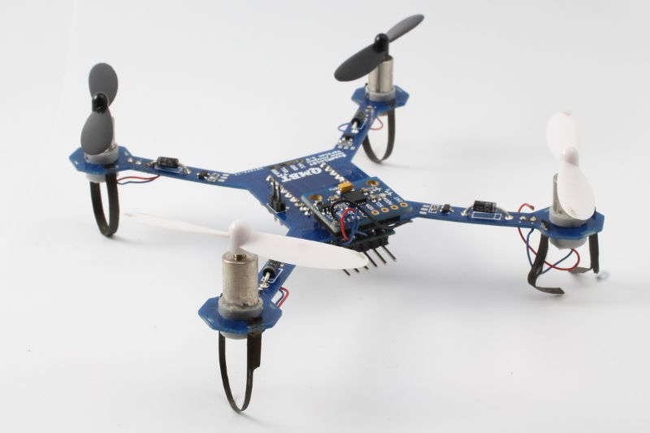
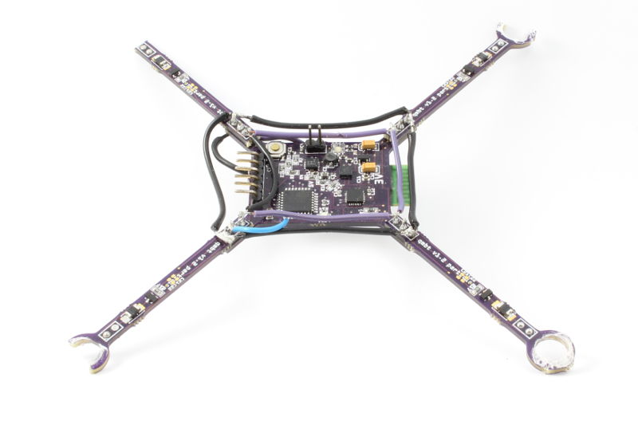
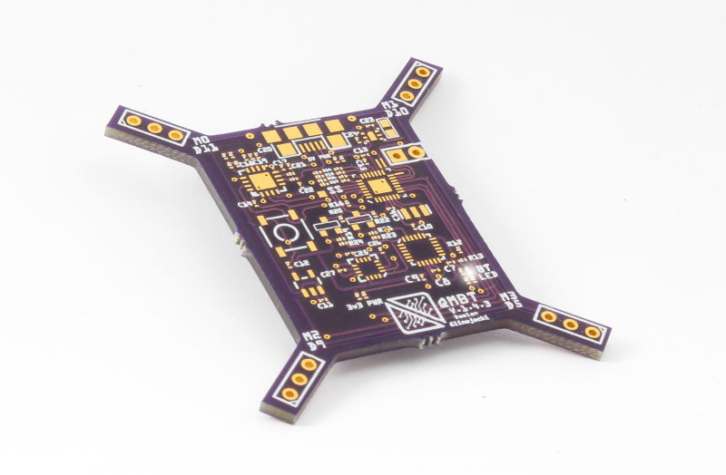

Introduction
QMBT - quad mini bluetooth. This project has seen a lot of history, it has been with me since the very begining. It has seen it all, the bad revisions and the mistakes, but it has also seen improvement and most important, it has seen me grow bigger and better with electronics. It is the grandfather of my circuit design.
History
This is by far my longest ongoing project. The first PCB I have ever made was for the very first QMBT. It included bluetooth breakout headers, breakout for the arduino pro mini and on board transistors to drive the motors.

As I proceeded to learn more about micro electronics the QMBT was redone with all native components, meaning there was no longer a need to include a thrid party board such as the pro mini. On board was the atmega328p, MPU6050, HMCL magnetometer and all other subcomponents. This was a very big leap forward.

Looking back at these, memories overflow. The circuitry worked, but it was far from perfect. Also, it was very tedious to work with an offboard FTDI. This time around I made a lot of changes; I added an FTDI chip, took off the magnetometer and redid the whole design using 45 degree bends for the traces.

Hardware
So what exactly goes into a quadcopter and why is it so exciting? Well lets look at it this way, how do we keep the quadcopter level? Can that be done by physics? Or does it have to be done by some sort of a smart leveling system? Even just this thought alone brings up a lot of questions that need to be answered. In order to go anywhere we have to look at the atonomy of a quadcoper and note what makes it tick.
Through extensive research and experimentation and thanks to my experience with RC planes and helicopters, these questions were not hard to answer. If we want the quadcopter to keep level, we need a smart system that will alter the speeds of the motors and keep the quadcoper nice and level. Now there is another problem, how do we accept input from the user and how do we relay this information to the motors?
Bluetooth is a versile yet powerful and well established way for devices to communicate. Having previously used bluetooth for communication it seemed like the best method user input. In the very first quadcoper the bluetooth module was external but in the later models it was integrated into the circuitry. It has performed its role with minor mishaps here and there.
The atmega328p has come for a ride a very long way in this project. You would think that a 16Mhz 8bit microprocessor would be quick enough for a quadcopter, but it unfortunately turns out it is not. The loop is too slow the precision is too low. At this point the project is shifting gears to a much faster Cortex M0 microprocessor.
The schematic is not the most beautiful as it was done in Fritzing. Since then I have moved on to KiCad and I truly love it. I regret using Fritzing for a prolonged period of time, but good things come to those who are patient. Here is the last schematic of the QMBT v.1.4
In the pictures above you might have notices that the body of the quadcopter is connected with headers to the legs. This was done in order to decrease the cost of the boards. When you order the boards, often times the manufacturer will charge you per squared inch, thus you want to keep the squared inch to the minimum. The mechanism worked perfectly for the purpose. It is strong enough and it keeps the cost down.
The most current PCB includes all the necessary hardware on board. It also features a seperate path for Analog Ground as it is very noisy and digital circuitry doesnt like that.

Batteries were another essential problem in the design. When designing boards that are limited in size, there are a lot of things to be considered. The layout is crutial, for example the USB had to be kept on the top as you see in the picture. The bluetooth was placed on the back due to the lack of space and due to its size. Also, I tried to keep the board more focused towards the top in order to couterweight the bluetooth module which had to be placed on the very bottom due to the antenna which had to be clear of any other traces, be it on the top or bottom.
Motor mounts were a big headache. For some strange reason the manufacturer was very off on the radius of the hole into which the motor mounts. This was a mystery to me as every time I ordered I tried to correct it by looking at the precent error and yet it always way off, be it too small or too big. I 3D printed motor holders which worked like a sandwich from the top and the bottom. This enabled me to not to use glue and thus I could swap out the motors if I really had to. This was a good system, but due to the low precision of the 3D printers, it was not perfect.
The over all shape of the quadcoper was kept to be a square despite the fact that it looks otherwise. I really liked this design and kept it through out the revisions. There was a lot of detail in the design of the shape as well. It had to take note of the prop size and it aimed at making the flow of air as efficient as possible. This allowed me to gain more from the motors.
To be Continued...
Please pardon the lack of content and grammar mistakes on this webiste, it is still very fresh and new. The minions are hard at work to document more projects and better shape the site. Check back soon for updates!